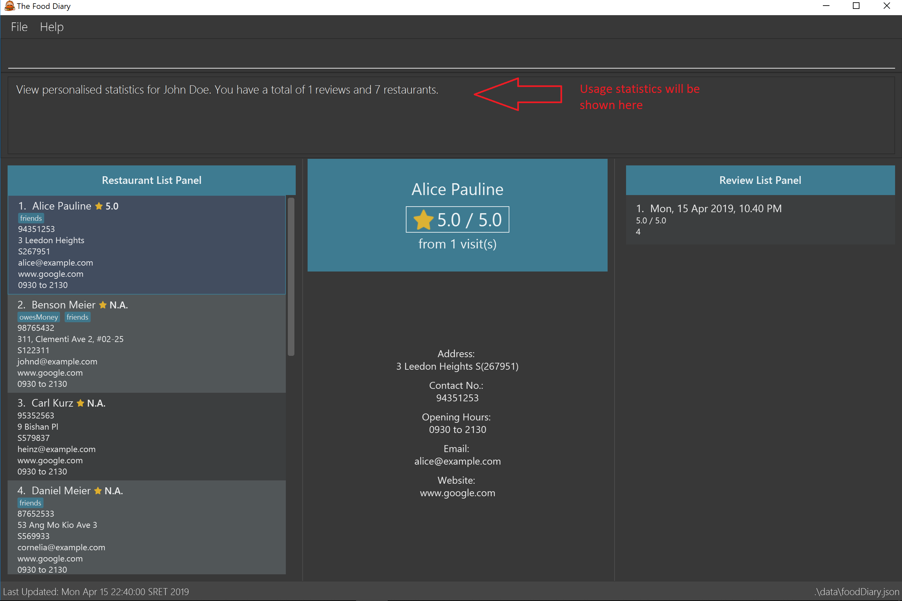

Overview
This project portfolio page serves to document my contributions to The Food Diary, a software engineering project undertaken as part of the National University of Singapore(NUS) School of Computing’s Software Engineering module,CS2103T. More information on this module can be found here
The Food Diary is a journal application for food lovers in Singapore to record their reviews of restaurants they have visited and receive recommendations for restaurants for future visits. The user interacts with it using a Command Line Interface(CLI), and it has a Graphical User Interface(GUI) created with JavaFX. It is written in Java, and has about 10,000 Lines of Code.
Summary of contributions
-
Major enhancement: I added the ability to get restaurant recommendations based proximity to a location.
-
What it does: This feature allows the user to list restaurants that they have not reviewed, based on the proximity of the restaurant to the location they provide.
-
Justification: This feature improves the product significantly because a user can receive recommendations based on their current location, making it a lot more convenient for them to find restaurants.
-
Highlights: This enhancement required the creation of multiple components to function. Firstly, a Python script was used to collect the postal data and parse it into a json file. A new storage system was then created to parse the postal data json file. Finally, this data was then used to sort the restaurants.
-
Credits: OneMap API was used to generate the postal data.
-
-
Minor enhancement: I added a name command that allows users to personalise The Food Diary with their own name.
-
Code contributed: The code that I have contributed to this project can be found here
-
Project management:
-
Documentation:
-
Create the initial User Guide: #2
-
-
Community:
-
Project conceptualisation:
-
Conceptualised the idea for Food Diary.
-
-
Contributions to the User Guide
Given below are sections I contributed to the Food Diary 's User Guide . They showcase my ability to write documentation targeting end-users. |
Welcome to The Food Diary

If you would like to get use the Food Diary straightaway, jump to the [Quick Start] to get started
What is the Food Diary?
The Food Diary (FD) is a desktop app for storing your personal food reviews and obtain food recommendations based on your past reviews.
Why use the Food Diary?
FD is optimized for those who prefer to work with a Command Line Interface (CLI) while still having the benefits of a Graphical User Interface (GUI). If you can type fast, FD can get your foodie tasks done faster than traditional GUI apps. Additionally, FD also stores your data locally, ensuring that your privacy is protected.
Some of the features that can look forward to:
-
Keeping track of restaurants you’ve visited.
-
Getting an aggregate rating over all your visits.
-
Finding out about new restaurants near you for your next gastronomical adventure!
Callout
Callouts are boxes with important information regarding the usage of the Food Diary. These 3 callouts are used throughout our User Guide.
| This is a note. A note indicates important additional information that should be read. |
| This is a tip. A tip indicates good to know information that would improve your user experience. |
| This is a warning. A warning indicates critical information that would affect the functionality of this programme. |
Listing all restaurants that you haven’t visited : listUnvisited
Shows a list of all restaurants that hasn’t been reviewed by you, ranked based on the proximity to the postal code provided by you.
Format: listUnvisited po/POSTAL_CODE
|
Calculation of proximity is based on postal code provided for the restaurant. If no postal code or an invalid postal code is provided for a restaurant, it will appear at the bottom of the list. |
Examples:
-
listUnvisited po/267951
Returns all the restaurants that has no reviews ranked based on the proximity to a postal code267951.
|
If you simply want to view unreviewed restaurants, enter |
Personalising your food diary with your name: name
Personalise your foodDiary with your name
Format: name n/YOUR_NAME
Examples:
-
name n/Jack The Sheep
View your profile and usage statistics : view
Set the cuisine of a restaurant identified by the index number used in the list.
Format: view
Examples:
view
View personalised statistics for John Doe. You have a total of 7 reviews and a total of 11 restaurants.
-
Example of profile statistics is shown below:

Figure 7. Your profile statistics will be reflected in the result command box as pointed out in the picture above
Contributions to the Developer Guide
Given below are sections I contributed to the Developer Guide. They showcase my ability to write technical documentation and the technical depth of my contributions to the project. |
listUnvisited feature which sorts Restaurant by distance to a specified postal code
Current Implementation
The listUnvisited feature accepts a postal code as user input and displays restaurants without reviews nearest to the user’s inputted postal code.
The implementation of this feature can be broken down into 3 main components.
1) Storage Component
2) Model Component
3) Logic Component
These implementations and scope of these components will be discussed below.
1. Storage Component
The Storage component’s function is to serialise the JSON data file PostalData.json, which contains the x and y-coordinates of every postal code in Singapore as of 13/03/2019.
The data is serialised into JsonSerializablePostalData which contains a List of JsonAdaptedPostalData.
This data can be retreived through the StorageManager#getPostalData() method.
| In order to update the PostalData.json, you can run the script found here. |
2. Model Component
The Model component’s function is to allow the retrieval of the PostalData of a specific postal code.
It contains a PostalDataSet which contains a HashMap of String representing the postal code mapped to the corresponding PostalData.
This contains the x and y-coordinates of the corresponding postal code.
The retrieval is done through the PostalDataSet#getPostalData(int postal) method.
PostalDataSet is obtained through the Model#getPostalDataSet() interface which returns of a Optional<PostalDataSet>.
3.Logic Component
The Logic component consists of two key sub-components, the Command component and the Comparator component.
The Command component parses the user input into a Postal and then checks if the Postal is within the PostalDataSet.
If the postal code provided is not within PostalDataSet, the ListUnvisitedCommand will simply filter out unreviewed restaurants.
Otherwise, if the postal code is valid, it will creates a new SortDistanceComparator<Restaurant> class with the postal code and PostalDataSet inputted as the parameters.
This SortDistanceComparator is then passed to the Model class to sort the SortedList which encapsulates the FilteredList.
This sequence is illustrated in the activity diagram below.

The SortDistanceComparator<Restaurant> class sorts the Restaurant based on the distance to the user inputted postal code.
It does this by first querying the PostalData of the postal code of the Restaurant from PostalDataSet then
calculating the distance from the user inputted postal code.
This result is then stored within the Comparator class.
If a Restaurant postal code is invalid or not in PostalDataSet, the distance will be set to Double.MAX_VALUE.
This implies that these Restaurant will appear at the bottom of the SortedList.
|
Given below is an example usage scenario and how 3 components behaves at each step.
Step 1. The user launches the application for the first time. The PostalDataSet will be initialised with data from PostalData.json
through the Storage component.
Step 2. The user calls listUnvisited po/267951. The listUnvisitedCommand class will be initialised.
A new SortDistanceComparator will be created by the
'listUnvisitedCommand` class containing the PostalData of '267951'.
The command will then call the method Model#filterAndSort(Predicate PREDICATE_SHOW_UNVISITED_RESTAURANTS, Comparator sortBy).
If the postal code provided by the user is invalid, there will be no change in ordering of the Restaurant. The Restaurant will be filtered to only show Restaurant without any Review
|
Step 3. The Model#filterAndSortByLocation() will first filter the filterList to show all Restaurants with zero reviews.
Step 4. The sortedList which encapsulates the filteredList will then be sorted based on the Comparator
provided to show the nearest Restaurants with zero review.
The following sequence diagram summarizes what happens when the user executes a listUnvisited Command.

Design Considerations
Aspect: How is location data accessed for each postal code?
-
Alternative 1 (current choice): Preload the data from a json file
-
Pros: Internet Service is not required.
-
Cons: May have performance issues in terms of memory usage.
-
-
Alternative 2: Making a API call to an external library e.g.Google API
-
Pros: Will use less memory and will always be updated and accurate.
-
Cons: Internet Service is required for the usage of the feature.
-
Aspect: Accessing of local postal data
-
Alternative 1 (current choice):
PostalDatais retrieved for eachRestaurantby theComparator.-
Pros: Easy to implement.
-
Cons: Increased coupling between
LogicandModel. There might also be performance issues.
-
-
Alternative 2: Using the x and y coordinates as a field in the Restaurant class
-
Pros: Repeated calls to retrieve the
PostalDatafromPostalDataSetis not required. -
Cons: If incorrect postal data is provided, the incorrect x and y coordinates will be written to the data file. This may be difficult to correct.
-
Use case: Getting unvisited restaurant recommendations
MSS
-
Food Lover enters command and his current postal code
-
Food Diary displays a list of restaurants ranked based on his proximity to the provided postal code.
Use case ends
Extensions
-
2a. Postal code entered is not valid.
-
2a1. Food Diary displays all the unreviewed restaurants.
Use case ends.
-
PROJECT: PowerPointLabs
{Optionally, you may include other projects in your portfolio.}